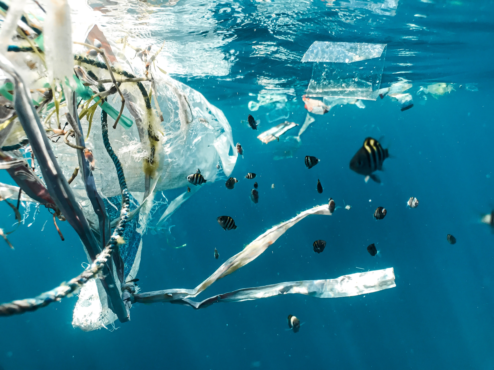

About
Over the last 200 years, human activities have tipped the scales against the survival of these ancient mariners. Slaughtered for their eggs, meat, skin, and shells, sea turtles suffer from poaching and over-exploitation. They also face habitat destruction and accidental capture—known as bycatch—in fishing gear. Climate change has an impact on turtle nesting sites; it alters sand temperatures, which then affects the sex of hatchlings. Nearly all species of sea turtle are now classified as endangered, with three of the seven existing species being critically endangered.
Sea turtles are a fundamental link in marine ecosystems. They help maintain the health of seagrass beds and coral reefs that benefit commercially valuable species such as shrimp, lobster, and tuna. Sea turtles are the live representatives of a group of reptiles that have existed on Earth and traveled our seas for the last 100 million years. Turtles have major cultural significance and tourism value. Five of the seven species are found around the world, mainly in tropical and subtropical waters. The remaining two species, though, have relatively restricted ranges: Kemp's ridley is found mainly in the Gulf of Mexico and the flatback turtle around northern Australia and southern Papua New Guinea.Sea turtles are a fundamental link in marine ecosystems. They help maintain the health of seagrass beds and coral reefs that benefit commercially valuable species such as shrimp, lobster, and tuna. Sea turtles are the live representatives of a group of reptiles that have existed on Earth and traveled our seas for the last 100 million years. Turtles have major cultural significance and tourism value. Five of the seven species are found around the world, mainly in tropical and subtropical waters. The remaining two species, though, have relatively restricted ranges: Kemp's ridley is found mainly in the Gulf of Mexico and the flatback turtle around northern Australia and southern Papua New Guinea.
Information from WWF
Youtube video from National Geographic
According to WWF. The list of the most endangered species on earth are:
- Javan Rhinos
- Amur Leopard
- Sunda Island Tiger
- Mountain Gorillas
- Tapanuli Orangutan
- Yangtze Finless Porpoise
- Black Rhinos
- African Forest Elephant
- Sumatran Orangutan
- Hawksbill Turtle